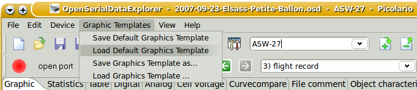
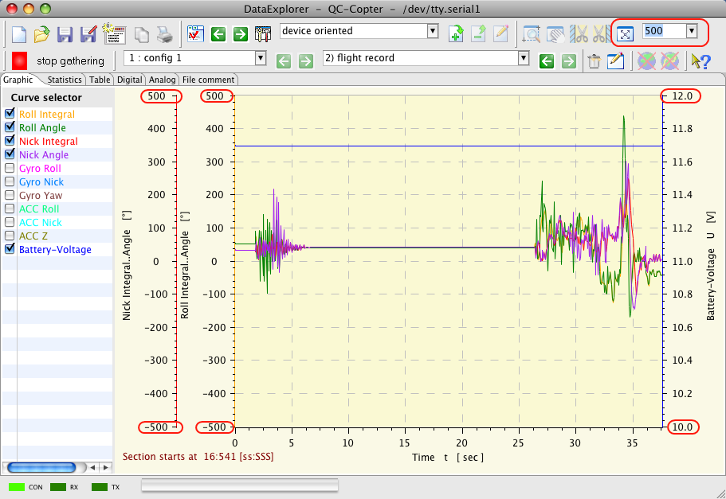

Using this menu graphics templates are managed. Graphics templates contains graphics visualization properties.
If available and applicable a graphics template will applied according the device and channel configuration. Graphics templates contains properties regarding the once adjusted by the context menu of the curve selector, like line color, number format, ... The directory to the graphic template files "GraphicsTemplates" under the application configuration path.

If there is a reasonable configuration displaying all your important curves found, go ahead and save such graphics configuration as default. The graphic templates contains definitions to adjust scale end values. Using devices which support live data gathering this could be important to judge the curves. Keep in mind, while displaying curves always the complete scale values margin will be used to display curves if not other specified. In cases curves with minimal deviation values could be displayed very similar to curves with ten times of the values. Only the scale end values will change. In similar case it would be advisable to configure a graphics template which have the maximum scale end values configured. Loading this graphics template at the beginning of live data gathering, the scale end values keep the same as configured until end of measurement. As sample a live data gathering of the QuadroControl. The QuadroControl will drive counteraction according to movement direction and force using its tri-axial accelerometer. To keep this in mind is important using the oscilloscope mode, were only a smaller part of the curve remains visible.

Hints : THe apply function of graphics templates overlay with visibility configuration for some devices. If there are some curves switched invisible using the visibility configuration of the certain device, they will not be visible by applying the graphics template. Some devices switch curves invisible automatically in cases where no real data are contained. Devices with visibility configuration are as example CSV2SerialAdapter, WStech Varios, GPS-Logger, NMEA-Adapter, UniLog and some others. Using the visibility configuration dialog such curves can be made visible again even if they do not contain reasonable data.